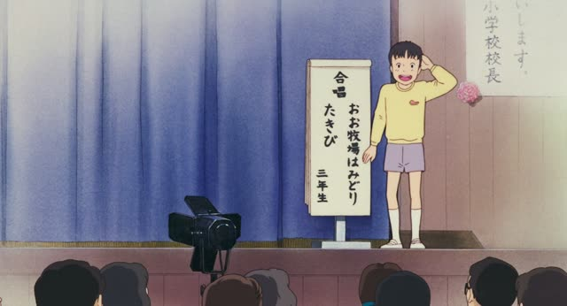
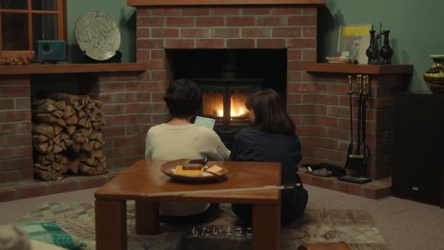

い-Adjective (Past negative)
| Polite | ～くなかったです everyday, softer ～くありませんでした standard polite, a bit firmer |
|---|---|
| Casual | ～くなかった drop the い, add くなかった |
Same meaning: "wasn't". Only the politeness changes.
Kotaro Lives Alone · Episode 5
危なくなかったですか？
"Wasn't it dangerous?"
To say an い-adjective wasn't something in the past, drop the い and add くなかった. Add です to make it polite.
On this card, a boy has come all the way on his own: 危ない → 危なくなかった → 危なくなかったですか？
Good Morning Call · Episode 12
でも 本当は 面白くなかっただろ。
"But really, it wasn't fun, right?"
The same form with no です is casual. On this card, だろ at the end adds "right?".
Quick Examples
A friend asks about the horror movie you saw last night.
全然怖くなかった。
"It wasn't scary at all."
CasualYour boss asks if the test was hard.
そんなに難しくなかったです。
"It wasn't that hard."
For polite, just put です after くなかった.
PoliteYou tried the new ramen place. Meh.
あまりおいしくなかったな。
"It wasn't that good."
CasualA friend asks how the weather was on your trip.
天気はよくなかった。
"The weather wasn't good."
いい is the odd one. It turns into よくなかった, never いくなかった.
CasualWith and without
寒かった。
"It was cold."
寒くなかった。
"It wasn't cold." Drop the い, add くなかった.
寒くなかったです。
Same thing, polite. Also fine: 寒くありませんでした, a bit stiffer.
寒いじゃなかった。
じゃなかった is for nouns and な-adjectives. い-adjectives use くなかった.
Examples from Media

Shirokuma Cafe · Episode 18
あれ？怖くなかったですか？
"Huh? Wasn't it scary?"
くなかった + です is the polite version.

Clannad · Episode 1
お、おいしくありませんでしたか？
"W-was it not good?"
おいしい drops い, adds くありませんでした. The stiffer polite form, same meaning as おいしくなかったですか.

Only Yesterday
確かに あんまり良くなかったから。
"True, it wasn't very good."
いい is odd: its past negative is よくなかった.

Quartet · Episode 7
どれも面白くなかった。
"None of them were any good."
どれも + negative: none of them.
Teasing Master Takagi-san · Season 2, Episode 11
作戦自体は悪くなかったんだ。
"The plan itself wasn't bad."
悪い → 悪くなかった.

Fullmetal Alchemist Brotherhood · Episode 23
貴様のトラップ、悪くなかった。
"Your trap wasn't bad."
悪い ("bad") → 悪くなかった = "wasn't bad", a grudging bit of praise. 貴様: a very rough "you".

From the New World · Episode 10
あの猫だって 別に悪くなかったんだ。
"Even that cat did nothing wrong."
悪い ("bad") → 悪くなかった = "did nothing wrong". あの猫だって: "even that cat".

Shirokuma Cafe · Episode 24
そんなすごくなかったでしょ。
"It wasn't that great, was it."
すごい drops い, adds くなかった.
Further Reading
A Dictionary of Basic Japanese Grammar
Appendix 1, Basic Conjugations · pp. 580–581
Tae Kim's Guide to Japanese Grammar
Adjectives · The i-adjective
Polite Form and Verb Stems · Using 「です」 for everything else